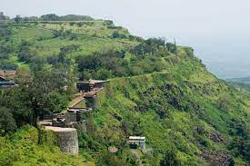

Visiting places Kolhapur
- Mahalaxmi Temple
- Rankala Lake.
- Panhala Fort
- Kopeshwar Temple
Learn more
Mahalaxmi Temple
About Mahalaxmi Temple
The temple takes its name from Ambabai/Mahalaxmi,and it is believed that the divine couple reside in the area.The temple belongs architecturally to the Chalukya empire and may have been first builtin circa 700 AD. Mounted on a stone platform, the image of the four armed and crowned goddess is made of sandstone.The image of Mahalaxmi carved in black stone is 2feet 8.5 inches in height.
.jpg)
Rankala Lake
About Rankala Lake
Rankala Lake is on the western side of Ambabai temple , it is a popular evening spot and recreation centre. This lake was constructed by late Maharajah, Shri Shahu Chhatrapati. The Lake is surrounded by Chaupati and other gardens. In the backdrop stands majestic Shalini Palace. Shalini Palace is the only star-rated Palace Hotel in Maharashtra. Chaupati also brings memories of Chatak daar Bhel-Puri and Ragda-Patties and variety of food snacks. In past, Kolhapur was famous as a centre for Film Industry. Many Marathi movies, Hindi movies have been shot in studios in Kolhapur. ShantKiran Studio on Rankala Lake was shot in numerous movies. This studio was owned by V. Shantaram (V stands Vanakudre), gift to Indian Film industry. Today, those days in history is being remembered as golden past.
.jpg)
Panhala Fort
About Panhala Fort
Panhala fort (also known as Panhalgad and Panhalla (literally "the home of serpents")), is located in Panhala, 20 kilometres northwest of Kolhapur in Maharashtra, India. It is strategically located looking over a pass in the Sahyadri mountain range which was a major trade route from Bijapur in the interior of Maharashtra to the coastal areas.[1] Due to its strategic location, it was the centre of several skirmishes in the Deccan involving the Marathas, the Mughals and the British the grand son's of chhatrapati shivaji maharaj East India Company, the most notable being the Battle of Pavan Khind. Here, the queen regent of Kolhapur, Tarabai Ranisaheb, spent her formative years. Several parts of the fort and the structures within are still intact

Kopeshwar Temple
About Kopeshwar Temple
Kopeshwar Temple is at Khidrapur, Kolhapur district, Maharashtra. It is a Hindu temple dedicated to Shiva. This temple is in Maharashtra It is also accessible from Sangli as well. It was built in the 12th century by Shilahara king Gandaraditya between 1109 and 1178 CE. It is to the east of Kolhapur, ancient & artistic on the bank of the Krishna river. Even though Silaharas were Jain kings, they built and renovated various Hindu temples, thus depicting their respect and love for all religions. Kopeshwar means angry Shiva .
.jpg)